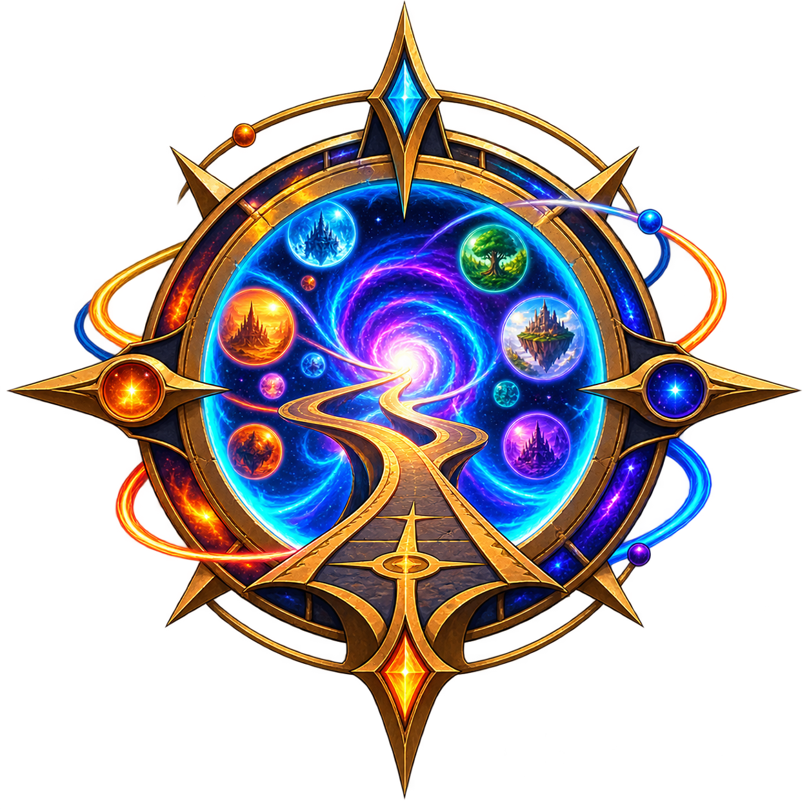

World view
The map shows what the world reveals.
The engine knows the rest.
◉ Real Campaign Copy — read-only mirror
⚔ Combat active — being resolved in Worldwalker

Shortcuts show common actions. You can attempt anything.
An architecture test for a graphical, map-driven Worldwalker — presentation in the spirit of Crusader Kings and Pax Historia, keeping Worldwalker's freeform typed actions, canon timeline and relationships. No real mechanics; a handful of demo state-events.
The player can see the living world. The simulation only tracks how reliable each piece of information is (confirmed / rumored / unconfirmed / unknown identity) — it does not hide places, people or events. The base artwork never changes: soft influence washes, routes, entities and event markers are separate layers drawn above it, and zoom decides how much detail you see.
Data source (top bar, dev-only): Demo Campaign (interactive fixture),
Real Campaign Copy (READ-ONLY copy of a real save, sample_data/real_naruto_save.json),
or Live Worldwalker (READ-ONLY poll of a running campaign via the local bridge —
bridge_proxy.py forwards only GET /api/state, /api/panels,
/api/combat/state). All three feed the same renderer through js/adapter.js.
Nothing writes back to the game, its saves, or the network. The Diagnostics drawer reports
what resolved and what did not.